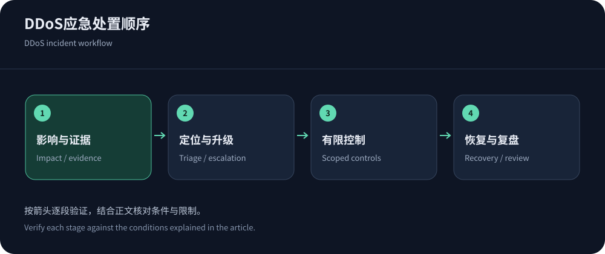
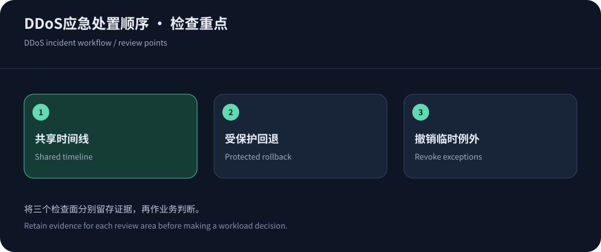

攻击发生时，第一目标是恢复关键服务
DDoS应急不是看到流量上涨就立即关闭整站，或者连续修改所有安全规则。先判断哪些用户和功能失败，是否影响支付、登录、API或管理通道，确认故障开始时间。组织一名协调人维护时间线，让网络、应用和供应商共享同一份影响描述。若没有证据确认攻击，就同时保留配置故障、发布异常和合法流量增长等解释。
CISA DDoS指南可用于建立识别与响应流程。本文是网站和服务器的防御处置方法，资料核实于2026年10月14日，不提供对外攻击操作。事件中应优先使用已有授权、可回退的控制，避免为追求即时指标而做不可解释的全量变更。
最先保存的不是截图，而是可关联记录
记录时间与时区、受影响域名或IP、用户地区、错误类型、边缘请求标识和源站指标。保存少量脱敏请求样本，保留路径、方法、状态、缓存状态和执行耗时，不将令牌、密码或个人数据直接发给支持。控制台截图可以补充，但单张峰值图无法说明持续时间、合法请求损失或处置何时生效。
不要为了追踪全部请求临时开启无限量详细日志，避免磁盘和日志费用成为第二个故障。采用可承受的采样和保留，说明采样口径。每次配置变更记下操作者、时间、范围、预期与回退条件；这样即使攻击强度自行下降，也不会把所有改善错误归因于最后一条规则。


用三组问题定位压力所在
网络入口已经不可达时，应用内限流可能无法触及上游瓶颈；网络正常但数据库排队时，单纯增加清洗带宽又可能无效。按下表收集证据，允许多层问题同时存在。
| 观察 | 进一步确认 | 处置方向 |
|---|---|---|
| 多协议或整条链路不可达 | 上游带宽、丢包、网络告警与非受影响对照，排除单个探针故障。 | 联系网络与防护供应商，按已约定入口和清洗流程处理。 |
| 连接建立或维持失败 | 连接状态、超时、TLS资源、端口与代理限制，区分新旧会话。 | 由对应协议入口调整控制，保留合法会话与管理路径。 |
| 部分HTTP路径或数据库饱和 | 路径、身份、缓存、执行成本和队列，检查发布与慢查询。 | 缩小昂贵接口范围，边缘控制与应用预算同步调整。 |
| 只有某地区或客户端失败 | 运营商、协议、规则命中和挑战兼容，检查是否误伤。 | 修正具体条件，不据此全站封禁或关闭全部安全。 |
联系供应商时，给出能执行的请求
向支持说明保护资源、开始时间、影响地区、业务后果和已做变更，附脱敏请求标识与关键指标。询问当前是否已触发防护、流量走向是否变化、合法请求如何识别、下一步需要谁批准。对容量或费用升级，要求写清范围与生效时间，避免多个团队各自发起互相冲突的请求。
Cloudflare DDoS资料用于理解其产品控制边界；AWS TCP/UDP指南提醒非Web业务需要相应入口。若使用CDN5等安全套餐，应按实际订单和支持路径升级事件，不假设官网宣传的网络能力已自动应用到所有IP和端口。
临时控制要窄、可观察、可撤回
优先保护关键路径，为已确认异常的接口、方法或可信身份维度施加有限控制，记录合法业务是否恢复。暂停非必要的昂贵导出、降低可延后的后台工作，可为关键交易释放资源，但应由业务负责人确认降级范围。缓存只用于确定可共享的内容，不能在应急中把账户页强制缓存。
不要只按共享出口严格封禁所有用户，也不要把每个API改成必须完成浏览器挑战。Cloudflare速率规则可帮助检查匹配、计数和动作。若某规则误伤，调整其局部条件并保留保护；撤销整个安全层往往会让攻击重新直达源站。重试也应有限，避免客户端在拒绝后同步放大请求。
对内信息同步，减少互相覆盖的变更
由协调人维护当前影响、正在执行的动作和下一次评估时间。每位操作人员先记录计划，再确认是否与其他团队冲突；网络切换、缓存失效和应用重启尤其需要相互知情。并行工作应有清楚分工，不让多个账户同时修改同一条规则。
对用户或业务团队的说明保持可验证，只描述已确认影响与恢复进展，不在缺少证据时断言攻击来源或规模。内部记录可以更细，但凭据和个人信息仍需控制访问。
回退必须仍然经过保护
不要把DNS临时指向裸源站作为通用恢复办法。先检查备用入口的证书、规则、允许列表、容量与应用状态，确认它能处理同一业务。DNS变更会受到缓存影响，现有连接也可能继续使用旧路径；回退效果需要从用户和两侧日志验证，不能以控制台提示保存成功作为结束。
若源站已经暴露，按可信回源和运维路径收紧访问，并确认健康检查不被挡住。涉及数据库写入或会话时，切换还要考虑幂等与一致性，避免访问恢复却出现重复操作。网站恢复细节见网站DDoS恢复指南，应用请求型事件可进一步看CC排查。


恢复窗口与事件复盘
恢复不仅看首页返回200，还要看关键任务、用户分组、尾延迟、源站队列和错误是否回到可接受范围。逐步放宽临时策略，观察正常峰值与客户端重连，避免一次性释放积压导致第二次过载。对于无法确认的残余异常，保留明确的跟进人和观察窗口。不要规定一个适合所有系统的固定等待分钟数。
事件后保存时间线与有效配置，核对攻击、合法重试、缓存填充和临时资源造成的费用。撤销例外和临时权限，归档日志，确认没有遗留裸露入口。复盘应找出检测、协作、规则或架构缺口，并给改进项负责人和验证方式。只有业务恢复和控制重新稳定，事件才适合关闭。